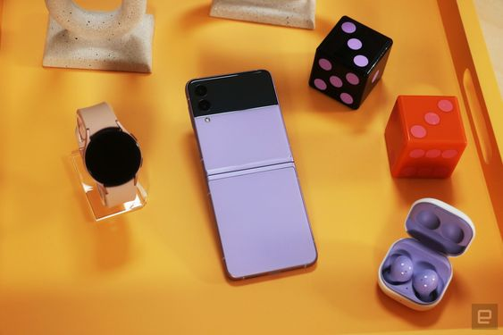

Carrissa Smith
I find web development interesting because I love design and I am always
in awe after visiting a website that has smooth transitions and "cool"
functionality. I want to go into front-end software development or UX/UI
design in the future and so I am quite excited to learn more programming
languages that help to aid in building my knowledge and skill in that avenue.
I am a second year Computer Science student and I am also pursuing a minor
in Management Studies. I am twenty years of age and hail from the parish of Manchester.
I am a christian and I love dogs. I am also a loyal samsung fan. My two favourite
phones right now are the Samsung Galaxy zFlip 4 and the s22 plus.
